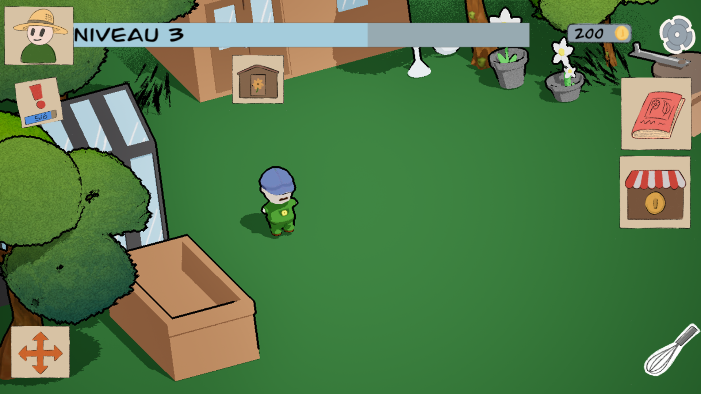
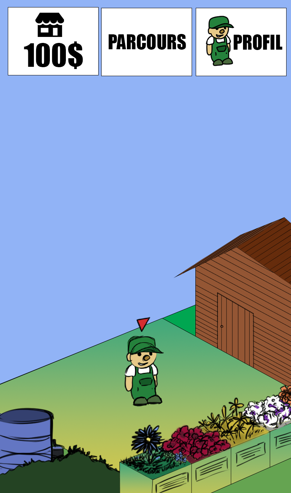
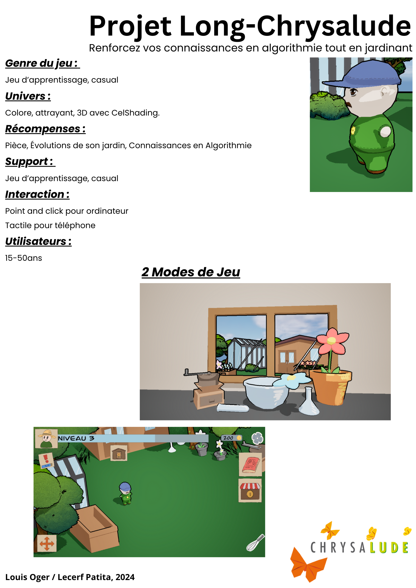
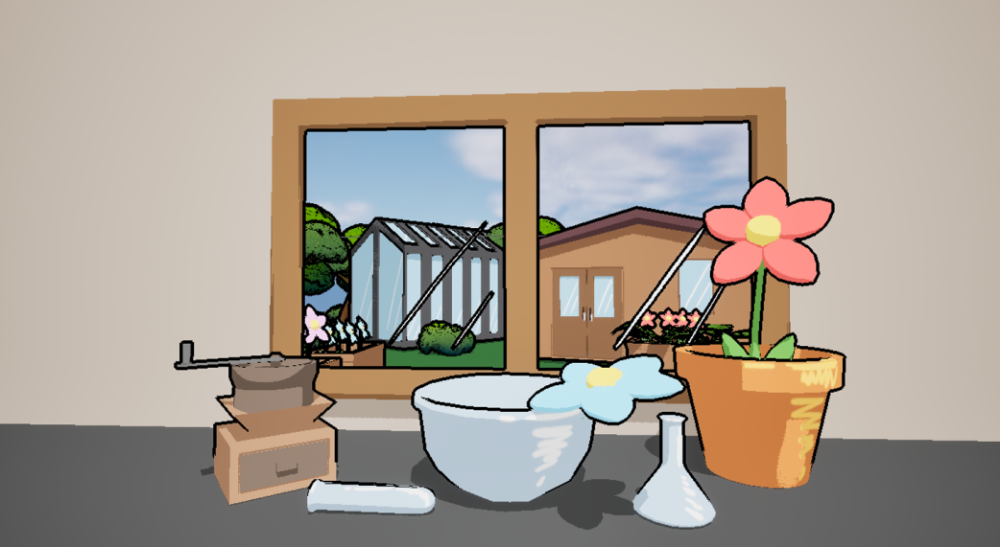

Ce projet en binôme consistait à créer un jeu mobile/PC/tablette pour
un client. La problématique de ce dernier était que notre projet devait
permettre à des apprenants de tout âge de mieux comprendre des notions
d’algorithmie telles que les fonctions, les variables et les boucles.
Avec mon binôme, nous avons choisi de créer un jeu de gestion où l’on
contrôle un jardinier à l’aide de blocs de code à faire glisser, avec
comme inspiration Scratch. Le jardin évoluerait à mesure que nos connaissances
en algorithmie seraient de mieux en mieux maîtrisées. Nous avons réalisé un
prototype sur Unreal Engine 5.



